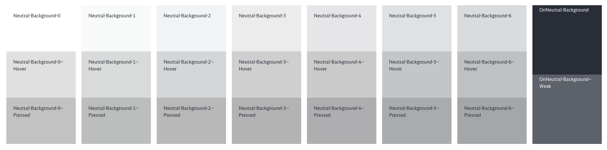

Color System
DB UX Design Guidelines 3.0 introduce a complete new set of color variables that follow some rules to work with.
Each accent color (primary, secondary, information, etc.) is provided in a group of four compatible colors of different tones for pairing, defining emphasis, and visual expression.
Accent colors primary, secondary, information, warning, error, critical and success are following the same pattern of a 4-color group.
Color Scheme – Primary (Example)
Each defined color has an interactive mode which means that colors for hover and pressed states are defined.
- Primary
- base key color
- Primary Background-Light
- background color for current key color. Only used for backrounds.
- Primary Background-Transparent
- Transparent or semi transparent backgrounds for current key color, e.g. used for form field backgrounds.
- On Primary
- is applied to content (icons, text, etc.) that sits on top of primary
- On Primary Background
- is applied to content (icons, text, etc.) that sits on top of primary background colors (background light or transparent).
- On Primary Background Weak
- is applied to content (icons, text, etc.) that sits on top of primary background colors (background light or transparent) and is a variant to weaken content on primary backgrounds.
Color Scheme Illustration
Neutral Color Scheme
The neutral color palette exists of 6 color variants. In contrast to key colors like primary, neutral colors can only be used for backgrounds.
